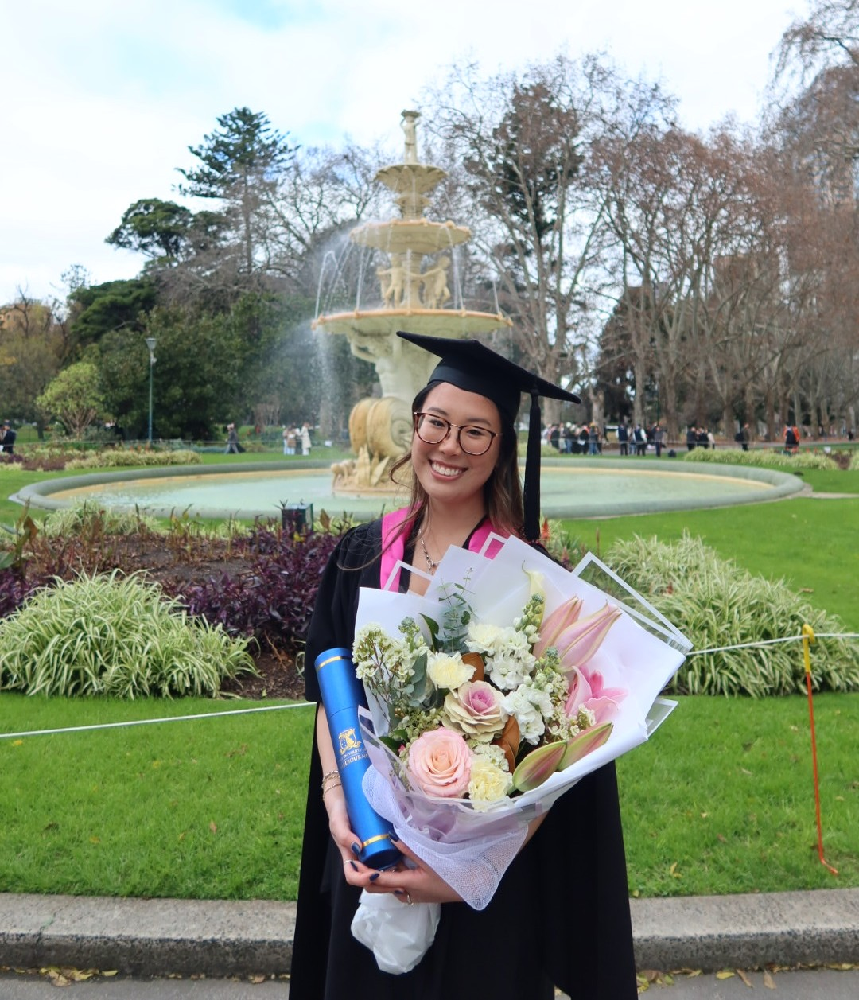

Hi!
My name is Chloe, and I am a graduate from the University of Melbourne, having completed my Masters of Architecture in 2026 and Bachelor of Design Majoring in Architecture and Construction in 2023.
My interests involve anything stemming from a creative nature, such as anything design or music oriented. I've played the violin since I was 7 years old, travelling overseas on tour, and have always enjoyed engaging in the creative arts. In my spare time, I love to spend time outdoors, travelling, and working on personal projects.
Having completed a major in Construction throughout my Undergraduate studies, I have gained an interest in construction processes and materials as well as the different aspects involved with the Built Environment industry.
This has led me to pursue work in the Infrastructure space, and I am currently a Digital Engineering Coordinator in the Design and Engineering Team at John Holland, working on the Suburban Metro Tunnel Project currently under construction in Melbourne's East.
The following collection of works is my portfolio developed through my Architecture studies.
